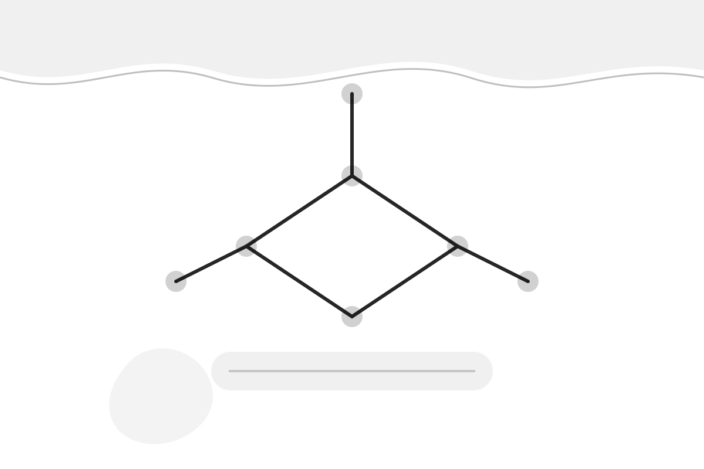

Химия — большой конспект
Быстрые правила + примеры: чтобы понимать темы и уверенно решать тесты.
1) Атом и таблица
Строение атома, периодичность, тренды.
2) Связь и строение
Ионная/ковалентная/металлическая, решётки.
3) Валентность и СО
Как не путать, как быстро считать.
4) Реакции
Типы реакций, уравнивание, условия.
5) Растворы
Концентрации, растворимость, разбавление.
6) Кислоты и основания
Классификация, свойства, обменные реакции.
7) ОВР
Окислитель/восстановитель, электронный баланс.
8) Расчёты
n, m, M, V, молярный объём, выход.
9) Частые ошибки
Шпаргалка «что проверять».
1) Атом и периодическая система
Почти все темы химии начинаются с атома: заряд ядра определяет свойства элемента.
Строение атома
Ядро: протоны (+) и нейтроны (0). Электроны (−) находятся в электронной оболочке.
Z (порядковый номер) = число протонов = заряд ядра; в нейтральном атоме Z = число электронов.
Изотопы
Изотопы — атомы одного элемента (одинаковое Z), но с разным числом нейтронов.
Это объясняет, почему относительная атомная масса в таблице — не целое число (средняя по изотопам).
Ионы
Катион — положительный ион (электронов меньше), анион — отрицательный (электронов больше).
Типично: металлы → катионы, неметаллы → анионы (но бывают исключения).
Металлы и неметаллы
Металлы легче отдают электроны, неметаллы чаще принимают или «делят» (ковалентная связь).
Граница условная: по диагонали B–Si–Ge–As–Sb–Te–Po идут полуметаллы (металлоиды).
Валентные электроны
Во многих задачах важнее всего внешние (валентные) электроны — именно они участвуют в связи.
У главных подгрупп номер группы часто помогает понять типичную валентность/заряд иона.
Оксиды
Оксид — соединение элемента с кислородом, где O обычно имеет СО −2.
Оксиды металлов часто основные, оксиды неметаллов часто кислотные (но есть амфотерные).
2) Химическая связь и строение вещества
Тип связи объясняет свойства: проводимость, температура плавления, растворимость.
Ионная связь
Возникает при притяжении катионов и анионов (обычно металл + неметалл).
Признаки: твёрдые кристаллы, высокие Tпл; растворы и расплавы проводят ток.
Ковалентная связь
Общие электронные пары (неметалл + неметалл). Бывает неполярная и полярная.
Полярность растёт с разницей электроотрицательностей; молекулы могут быть полярные/неполярные по геометрии.
Металлическая связь
«Электронный газ» связывает катионы металла в решётке.
Признаки: электропроводность, теплопроводность, пластичность, металлический блеск.
Кристаллические решётки
Ионная (NaCl), молекулярная (I2, лёд), атомная/ковалентная (алмаз, SiO2), металлическая (Fe).
Именно решётка часто решает, почему «похожая» формула ведёт себя иначе.
Водородная связь
Возникает, когда H связан с F/O/N и притягивается к соседней молекуле.
Объясняет высокие Tкип воды, растворимость спиртов, особенности льда.
Растворимость
«Подобное растворяется в подобном»: полярное лучше в полярном (вода), неполярное — в неполярном.
Ионные соединения часто растворимы в воде, но есть важные исключения (осадки).
3) Валентность и степень окисления
Валентность — «сколько связей», степень окисления (СО) — условный заряд при полном смещении электронов.
Правила СО (минимум)
Простые вещества: СО 0. Щёлочные металлы: +1, щёлочноземельные: +2. Фтор всегда −1.
Кислород обычно −2 (кроме пероксидов), водород обычно +1 (кроме гидридов металлов).
Как быстро находить СО
Сумма СО в молекуле = 0; в ионе = заряд иона.
Дальше выражай неизвестное через известные (например, в H2SO4: 2·(+1) + S + 4·(−2) = 0 → S = +6).
Валентность (школьно)
Для многих элементов есть типичные валентности (H — I, O — II, N — III/V, C — IV).
Валентность удобна для составления формул (крест‑накрест), но СО нужна для ОВР.
4) Реакции и уравнивание
Главное — определить тип реакции и понять, идёт ли она до конца (газ/осадок/вода/слабый электролит).
Типы реакций
Соединение, разложение, замещение, обмен.
Ещё делят по тепловому эффекту (экзо/эндо) и по ОВР (есть/нет изменения СО).
Закон сохранения массы
Число атомов каждого элемента слева и справа в уравнении должно совпадать.
Коэффициенты меняем перед формулами, индексы в формулах — нет.
Условия протекания обмена
Реакция обмена идёт до конца, если образуется осадок, газ или вода.
В задачах часто достаточно определить эти «движущие силы».
Ионные уравнения (когда надо)
Сильные электролиты расписывают на ионы, осадки/газы/вода — нет.
Сокращай «зрительские ионы», оставляй только то, что реально меняется.
Скорость реакции (идея)
Ускоряют: повышение температуры, увеличение концентрации, катализатор, измельчение твёрдого, перемешивание.
В тестах часто спрашивают, какой фактор изменит скорость и почему.
Равновесие (в общем)
Если система в равновесии, изменения условий могут сместить равновесие (Ле Шателье).
Важно: катализатор не смещает равновесие, только ускоряет достижение.
5) Растворы и смеси
В задачах чаще всего нужны концентрации и умение переводить величины.
Массовая доля
Массовая доля растворённого вещества: это доля массы вещества в массе раствора.
Если известно w и масса раствора — находишь массу вещества; если смешиваешь растворы — складывай массы вещества и раствора отдельно.
Молярная концентрация
Молярность C показывает количество вещества на объём раствора.
Частая цепочка: m → n (через M) → C (через V), следи за единицами (л vs мл).
Разбавление
При разбавлении водой количество растворённого вещества сохраняется.
Удобная идея: «до» и «после» масса (или количество) вещества одинаковы.
6) Кислоты, основания, соли
Классика неорганики: свойства, типичные реакции и «что с чем реагирует».
Кислоты
Кислота — электролит, который в растворе даёт H+ (в школьной модели).
Сильные кислоты диссоциируют почти полностью, слабые — частично (важно для качественных вопросов).
Основания
Основание — соединение металла с OH− (в школьной модели); растворимые основания — щёлочи.
Амфотерные гидроксиды могут проявлять и кислотные, и основные свойства.
Соли
Соли — ионные соединения из катионов металлов/аммония и анионов кислотных остатков.
Реакции солей в растворе часто определяются растворимостью и силой кислот/оснований.
Нейтрализация
Кислота + щёлочь → соль + вода (и это обычно идёт до конца).
В ионной форме часто сводится к H+ + OH− → H2O.
Кислота + металл
Многие металлы реагируют с кислотами с выделением H2, но не все (зависит от активности).
Благородные металлы с разбавленными неокисляющими кислотами обычно не реагируют.
Соль + соль
В растворе реакция возможна, если образуется осадок/газ/вода.
По сути это снова правило «движущей силы» обменной реакции.
7) Окислительно‑восстановительные реакции (ОВР)
ОВР — там, где меняются степени окисления. Это основа для многих задач про реакции и продукты.
Определения
Окисление — увеличение СО (отдача электронов), восстановление — уменьшение СО (присоединение электронов).
Окислитель принимает электроны и сам восстанавливается; восстановитель отдаёт электроны и сам окисляется.
Признаки ОВР
Если в уравнении есть элементы, у которых меняется СО — это ОВР.
Замещение металлом из соли — почти всегда ОВР; нейтрализация — обычно не ОВР.
Баланс (идея)
Суммарно отданных электронов должно быть столько же, сколько принятых.
Для тестов часто достаточно правильно расставить коэффициенты по изменениям СО.
8) Расчётные задачи (быстрая база)
Здесь важны определения величин и аккуратность с единицами.
Количество вещества n
Связано с массой и молярной массой: чем больше масса при одинаковом веществе, тем больше n.
Почти всегда нужно перейти: m → n или n → m, а затем использовать коэффициенты реакции.
Объём газа
В задачах часто считают объём по количеству вещества при стандартных условиях.
Следи, какие условия указаны в задаче; если условий нет — в школьных задачах часто подразумевают «н.у.».
Выход продукта
Фактический выход сравнивают с теоретическим.
Сначала найди теоретическое количество/массу продукта по уравнению, потом сравни с фактом.
9) Частые ошибки и быстрые проверки
Если сомневаешься в ответе — проверь эти пункты, они чаще всего «ловят» ошибку.
Единицы
л/мл, г/кг, %/доля, мин/с — это частая причина неверного ответа.
Коэффициенты
Коэффициенты меняют количества веществ, индексы — состав вещества; не путай.
Растворимость
Если в обменной реакции нет осадка/газа/воды, то «в растворе» она может не идти.
ОВР
Не путай: кто окислитель/восстановитель определяется по электронам, а не по «плюсам/минусам» в названии.
СО и заряд
СО — условная величина; заряд иона — реальный. В сложных ионах СО элементов суммируются в заряд.
Геометрия молекул
Полярность молекулы зависит не только от связей, но и от формы (симметрия может «обнулить» диполь).
